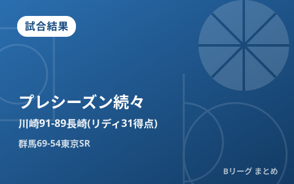

プレシーズンマッチ続々 川崎が新加入リディ31得点で長崎に91-89の接戦制す、群馬はサンロッカーズに快勝

9月22日に開幕する新リーグ「B.PREMIER（B.LEAGUE 2026-27シーズン）」に向けて、各クラブのプレシーズンマッチが各地で行われています。9月13日には川崎ブレイブサンダースが東急ドレッセとどろきアリーナで長崎ヴェルカと対戦し、新加入のジェイデン・リディが31得点17リバウンド3スティールの活躍を見せて91-89の接戦を制しました。同日、群馬クレインサンダーズは東京サンロッカーズに69-54で快勝しています。開幕まで残り1週間となり、各クラブの新戦力の仕上がりが徐々に見えてきました。
川崎、新加入リディが31得点17リバウンドの大暴れで長崎に競り勝つ
川崎ブレイブサンダースは9月13日、東急ドレッセとどろきアリーナで長崎ヴェルカとプレシーズンマッチを行い、91-89の2点差で勝利しました。今シーズンから加入したジェイデン・リディが31得点17リバウンド3スティールと圧巻の活躍でチームを牽引。試合後、米須玲音は「やるべきことを遂行できた」とコメントしています。開幕を約1週間後に控える中、僅差の接戦をものにしたことは開幕へ向けて好材料となりそうです。
群馬はサンロッカーズに69-54で快勝、スタンリー・ジョンソンが17得点
群馬クレインサンダーズも同じ9月13日に東京サンロッカーズとプレシーズンマッチを実施し、69-54で勝利しました。8分×4クォーター制で行われた試合は、第1クォーターから22-16とリードを奪うと、そのまま主導権を渡さない展開。得点面ではスタンリー・ジョンソンが17得点、ケリー・ブラックシアー・ジュニアが12得点、トレイ・ジョーンズと細川一輝がそれぞれ10得点を記録しました。
| クォーター | 群馬 | 東京SR |
|---|---|---|
| 1Q | 22 | 16 |
| 2Q（累計） | 35 | 22 |
| 3Q（累計） | 52 | 37 |
| 4Q（最終） | 69 | 54 |
開幕まで1週間、各地でプレシーズンマッチが続く
今シーズンは大規模な再編「B.革新」により、B.PREMIER・B.ONE・B.NEXTの3カテゴリー・全55クラブ体制でスタートします。開幕を控えたこの時期は各クラブがプレシーズンマッチを組み、外国籍選手を含む新加入選手のコンディションやチーム連携を確認する重要な期間です。千葉ジェッツふなばしも9月12日・13日に川崎との対戦を予定するなど、開幕直前まで各地で調整試合が続く見通しです。新リーグの開幕日程やレギュレーションはBプレミア開幕の記事にまとめています。
Q. プレシーズンマッチ（練習試合）の結果はレギュラーシーズンの成績に影響する？
A. 影響しません。プレシーズンマッチはあくまで開幕前の調整を目的とした非公式戦で、勝敗や個人スタッツは公式記録には反映されません。ただし新加入選手のフィット感や仕上がり具合を見る材料として注目されています。
出典：バスケットボールキング「川崎がプレシーズンで長崎に2点差勝利、新加入リディは31得点…米須玲音「やるべきことを遂行できた」」／川崎ブレイブサンダース公式「2026-27 プレシーズンゲーム 川崎91-89長崎」／群馬クレインサンダーズ公式「【試合結果】9月13日(日) vs 東京サンロッカーズ（プレシーズンマッチ）」ほか
https://basketballking.jp/news/japan/20260913/632296.html
https://kawasaki-bravethunders.com/schedule/preseason/20260913/
https://g-crane-thunders.jp/news/detail/id=22164